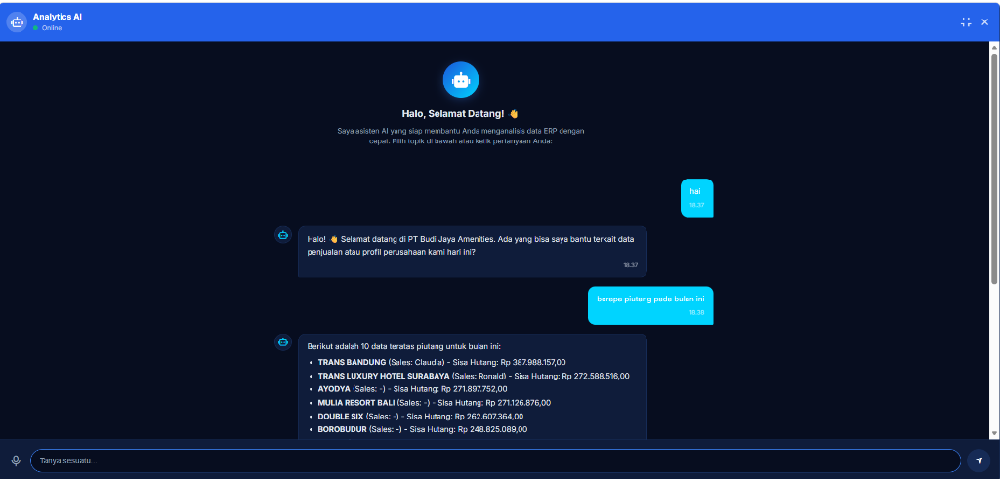

ERP Analytics AI Assistant
Chatbot AI Asisten Analisis Data ERP & SAP Terintegrasi RAG

ERP Analytics AI Assistant adalah chatbot berbasis Artificial Intelligence yang dikembangkan untuk membantu pengguna ERP memperoleh informasi bisnis secara cepat menggunakan bahasa natural. Sistem memungkinkan pengguna mengakses data penjualan, piutang, pelanggan, produk, dan berbagai indikator bisnis lainnya tanpa harus membuka laporan atau dashboard secara manual.
Chatbot terintegrasi dengan database ERP perusahaan dan mampu memahami pertanyaan pengguna dalam bahasa sehari-hari untuk menghasilkan insight bisnis yang relevan. Sistem dirancang sebagai AI Business Assistant yang membantu manajemen, supervisor, dan tim operasional memperoleh informasi penting secara instan melalui antarmuka percakapan yang sederhana dan intuitif.
- Natural Language Business Query: Pengguna dapat menanyakan data bisnis langsung menggunakan pertanyaan bahasa sehari-hari.
- ERP Data Integration: Integrasi langsung ke database sistem ERP & SAP untuk memperoleh data transaksi yang aktual.
- AI-Powered Business Assistant: Asisten virtual yang siap menganalisis data operasional dan memberikan penjelasan terstruktur.
- Sales Analytics Chatbot: Kueri analitis instan untuk performa penjualan berdasarkan sales, depo, produk, dan wilayah.
- Customer Analytics Query: Pemantauan status transaksi pelanggan, riwayat order, dan profil interaksi pelanggan secara cepat.
- Accounts Receivable Analysis: Analisis piutang jatuh tempo dan sisa hutang pelanggan melalui percakapan chatbot.
- Business Insight Generation: Pembuatan ringkasan insight bisnis secara otomatis dari hasil kueri data terintegrasi.
- Product Performance Analysis: Pencarian cepat produk terlaris, persediaan stok, dan kontribusi produk terhadap margin.
- Context-Aware Conversation: Chatbot mengingat konteks pertanyaan sebelumnya untuk memberikan jawaban berkelanjutan yang logis.
- Real-Time Data Retrieval: Pengambilan data langsung dari ERP saat kueri diajukan untuk keakuratan informasi bisnis.
- Feedback & Learning Mechanism: Mekanisme umpan balik pengguna untuk meningkatkan kualitas respons model AI secara berkala.
- Business Knowledge Base Integration: Integrasi basis pengetahuan bisnis perusahaan untuk panduan SOP operasional.
- Natural Language Processing (NLP): Pemrosesan bahasa alami untuk memahami maksud dan entitas dalam pertanyaan pengguna.
- Large Language Model (LLM) Integration: Integrasi model bahasa besar (LLM) untuk respons percakapan yang natural dan kontekstual.
- Retrieval-Augmented Generation (RAG): Pencarian dokumen pengetahuan bisnis dan data ERP sebagai basis referensi jawaban AI.
- Business Data Interpretation: Kemampuan menerjemahkan data mentah database menjadi penjelasan naratif yang mudah dimengerti.
- Conversational Analytics: Analisis percakapan interaktif untuk memecahkan kueri data bisnis yang kompleks.
- Contextual Question Understanding: Pemahaman mendalam terhadap variasi pertanyaan dengan konteks bisnis yang sama.
- AI-Powered Recommendation System: Rekomendasi tindakan bisnis taktis berdasarkan hasil temuan analisis data kueri.
- Akses Informasi Instan: Mempercepat akses informasi bisnis tanpa perlu membuka dashboard atau laporan secara manual.
- Analisis Data Mandiri: Membantu pengguna non-teknis (manajemen/sales) melakukan kueri analisis data menggunakan bahasa natural.
- Efisiensi Waktu Kerja: Mengurangi waktu pencarian informasi operasional dan manajerial secara signifikan.
- Keputusan Akurat & Cepat: Menyediakan insight bisnis secara cepat untuk mendukung pengambilan keputusan berbasis data di lapangan.
| Peran | AI Developer & BI Developer |
| Instansi / Klien | Multi-Client ERP/SAP Integration |
| Tahun | 2026 |
| Tech Stack |
Python
Flask
LLM Integration
RAG Framework
NLP
SQL Database
REST API
JavaScript / HTML5 / CSS3
|